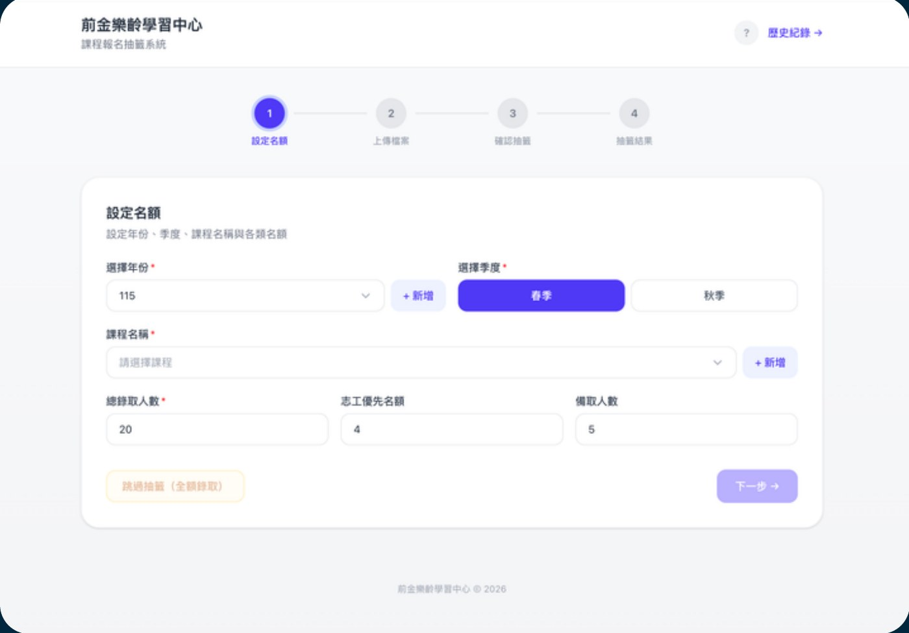

網頁系統 · Selected Work · 2026
抽籤系統
前金樂齡學習中心的課程報名抽籤系統：管理者設定年份、季度、課程與各類名額， 學員上傳報名檔案後系統自動抽籤，全程可追蹤設定名額 → 上傳檔案 → 確認抽籤 → 公佈結果四個步驟， 也支援「跳過抽籤（全額錄取）」的情境。

要解決的問題
前金樂齡學習中心每季開放長者報名課程，熱門課程的報名人數常常超過名額， 過去只能用人工抽籤決定錄取名單，流程繁瑣又容易出錯。 這個系統把整個報名抽籤流程數位化：管理者設定名額與規則， 學員上傳報名資料，系統自動完成公平抽籤並公佈結果。
四步驟流程
介面用清楚的步驟條引導管理者：① 設定名額（選擇年份、季度、課程名稱， 並分別設定總錄取人數、志工優先名額、備取人數）→ ② 上傳檔案 （匯入報名學員名單）→ ③ 確認抽籤（核對名單與規則無誤後執行抽籤）→ ④ 抽籤結果（公佈錄取與備取名單）。若某堂課報名人數本來就不到名額， 也可以直接「跳過抽籤（全額錄取）」，不用跑完整套流程。
成果：把原本要人工核對、手動抽籤的流程改成線上系統， 委託的老師甚至沒有再回頭問過操作上的問題，就自己完成了新年度的抽籤—— 這也是設計這個系統時最在意的一件事：好用到使用者完全不需要問設計者。